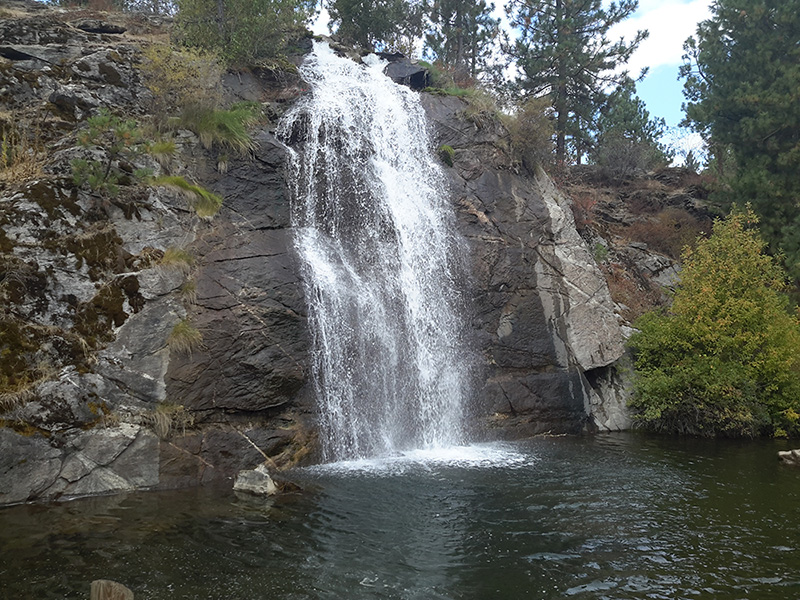
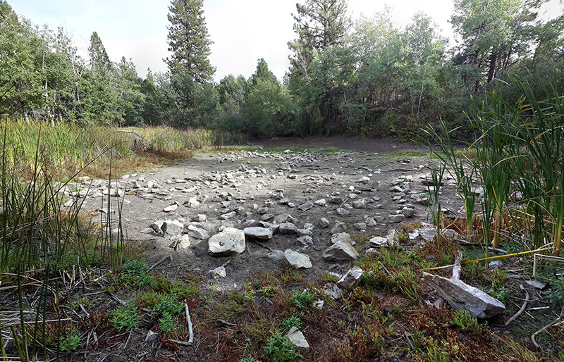
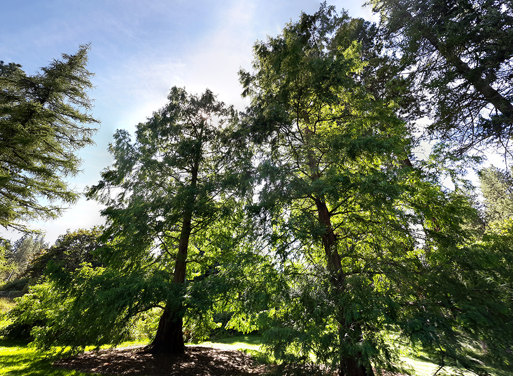

Natural
Using old Maps and Statilite images i have maped natural features such as wells, springs, and creeks.
I have mapped natural features in places in north Idaho and Washington.
I have made a complete map of the trails on mount baldy as well as it's man made and natural features
such as quarries and cell phone towers.
N47 ° 40' 54.00", W117 ° 13' 27.00"

location

location
